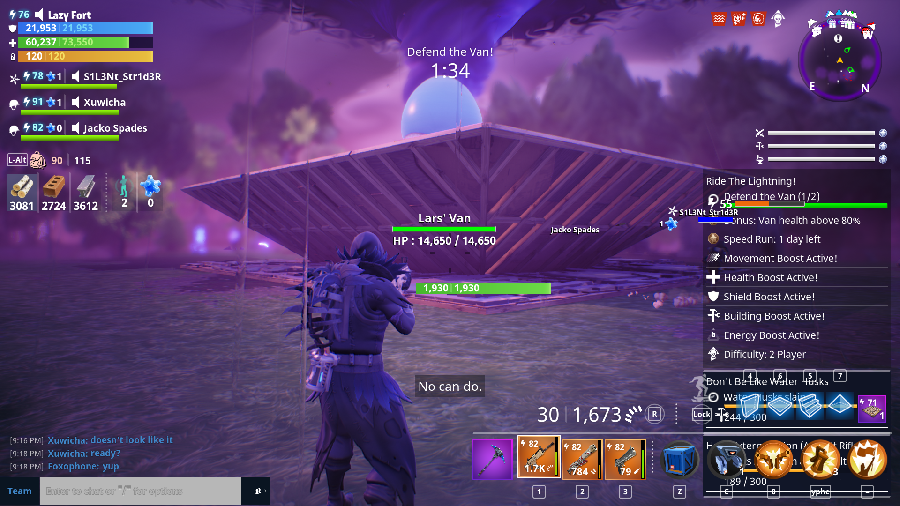

No matter what the mission is, if you're defending an objective, you need to build defenses around it. The goal of this page is to show the most efficient and effective defenses to build around objectives.
The way you build immediately surrounding the objective is one of the most important aspects of the defense stage. If all else fails, this build will keep the objective safe, and without it, it is susceptible to major damage.
The constuctor class provides a massive boost to building. Use the BASE ability to make your structures much more powerful and gain special perks.
One of the simplest builds to do is to put a simple pyramid around the objective. This can be accomplished by placing trianges all around the structure, editing them to come to a point, and then placing another triange/floor on top of the objective to creat the pyramid. If done right, ememies should have to walk all the way up the pyramid before they attempt to attack the building.

This build is mostly used if your objective cannot be built on top of, like a Retrieve the Data or Repair the Shelter mission. Start by putting walls all around the site you are trying to defend. Then, place triangles all around these walls. This time, instead of angling the triangles towards the objective, angle them away. Place floors all around the area, and, if you can afford it, floor launchers on these floors. That way, if enemies get to the objective, they will hit the 45° angle and be flung away. You still should add a simple roof on top of the objective to stop it from being hit by Lobbers and Flingers.
The most important part of defending any objective. If you can kill all of the enemies quickly, you don't have to worry about the objective.